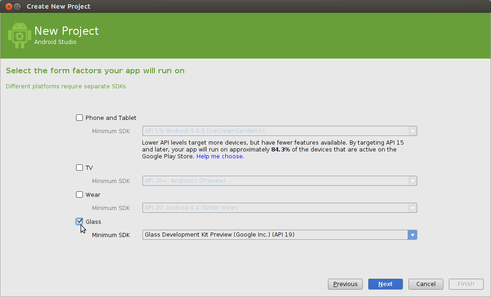
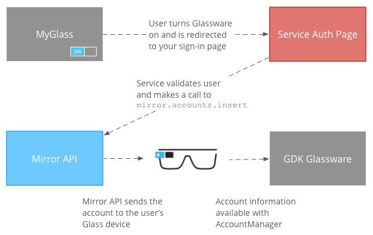

Introduction
GlassKit is a modern revival of the original Google Glass Explorer Edition. This is accomplished by providing up-to-date information on how to revive your Glass with XE24, how to restore some of the original functionality, and how to build Glassware yourself!
Contributing
GlassKit is a free and open source project. The code is on GitHub, as well as issues and feature requests.
Questions and Concerns
If you have any questions or concerns, please send an email to glasskit@jordanreger.com.
View our GitHub page or our Bento box!
Getting Started
Getting started with your Glass is fairly complicated, but don't let it phase you! Below is an incomplete tutorial on how to get your Glass up and running.
Installing XE24
This is a bit confusing as the instructions have changed over the years, and practically every revision recently doesn't really work. The instructions on this page are a great starter, but some things don’t work. Here’s a (hopefully) decent walkthrough.
Android Studio + Google USB Driver
- Make sure to have Android Studio installed
- In the
toolsmenu of Studio, go to the SDK manager and select the SDK Tools tab. - Select the checkbox next to Google USB Driver and then click Apply and finally OK.
- Reboot the computer to make sure that it's installed.
Allow Unsigned Drivers
This will allow us to temporarily disable driver signature enforcement. This only works in Windows.
- Click the Start button, hold
Shiftand clickRestart - Once it reboots, go to Troubleshoot > Advanced options > Startup settings > Restart
- Press
F7to disable driver signature enforcement - Open CMD as an administrator
- Type
bcdedit /set testsigning onand press Enter
Editing the Driver
I would recommend following this tutorial for the rest of the process.
You must edit the driver in both regular mode and fastboot; otherwise
adbwill not recognize the device.
Entering Fastboot
To enter fastboot, you must enter Recovery Mode by holding down the camera button, tapping the power button once, and then continuing to hold down the camera button for 10 seconds. Once you do this, you will see a menu with 4 options, but we want to choose Reboot into fastboot.
Successful Installation of XE24
Congrats! You've successfully installed XE24 and you're ready to start using Glassware. At the moment, it's a bit of a technical process; we're working on it though! For now, join the Discord and a member of the community will be able to help you if you need it.
Developing Glassware
Developing Glassware is actually quite easy, due to the Google Glass being an Android device. It still takes some care, as it's not a new device and it's certainly not a "normal" one. The following guide (the Hello Glass tutorial) will help you get accustomed to modern Android development for a device that's not so modern.
Hello Glass Tutorial
Introduction
Before we start; if your Glass isn't set up yet, view this page. Otherwise, this assumes that your Glass is set up, you have at least a little bit of technical/programming knowledge, and you're ready to go. If you'd like to take a look at the fully set up project or take the app for a spin, check out the HelloGlass GitHub repository.
Getting started
First, let's initialize a new Empty Activity project with the Minimum SDK set to API 19: Android 4.4 (KitKat). Wait for a bit for it to get itself set up, and then we're ready to move on.
Importing the GDK
To get started, please download the original GDK - here's the source if you ever want to take a look: GlassKit/gdk - and drag it into the app/libs folder (which can be found by switching the tab at the top left from Android to Project). If the libs folder isn't in the app directory, you will have to make it.1 Finally, right click on gdk.jar in the libs folder and select Add as Library from the menu to be able to use it in your project. You will now be able to use the old GDK in whatever version you're using!
Changes to the default project
Below are a few changes we need to make before we're ready to run:
AndroidManifest.xml
At the path app/manifests/AndroidManifest.xml, we're going to tweak just a couple things. Replace the <activity></activity> with what's below:
<activity
android:name="com.{your name}.{project name}.MainActivity"
android:enabled="true"
android:exported="true">
<intent-filter>
<action android:name="com.google.android.glass.action.VOICE_TRIGGER" />
</intent-filter>
<meta-data android:name="com.google.android.glass.VoiceTrigger"
android:resource="@xml/show_me_a_demo" />
</activity>
As mentioned here on step 4, to make sure you don't blind yourself, remove the following line inside the first <application> tag:
android:theme="@style/Theme.{project name}"
MainActivity.java
At the path app/java/com.{your name}.{project name}/MainActivity.java, we need to change the whole file, essentially. Copy and paste the following in, replacing what's there already:
package com.{your name}.{project name};
import android.app.Activity;
import android.os.Bundle;
public class MainActivity extends Activity {
@Override
protected void onCreate(Bundle savedInstanceState) {
super.onCreate(savedInstanceState);
setContentView(R.layout.activity_main);
}
}
activity_main.xml
At the path app/res/layout/activity_main.xml, we're going to replace everything once again with what's below:
<?xml version="1.0" encoding="utf-8"?>
<FrameLayout
xmlns:android="http://schemas.android.com/apk/res/android"
android:layout_width="match_parent"
android:layout_height="match_parent">
<TextView android:id="@+id/textView"
android:layout_width="match_parent"
android:layout_height="match_parent"
android:gravity="center"
android:text="Hello Glass!" />
</FrameLayout>
show_me_a_demo.xml (new)
We must make a new file at the path app/res/xml entitled show_me_a_demo.xml, and inside is:
<?xml version="1.0" encoding="utf-8"?>
<!-- https://developers.google.com/glass/develop/gdk/reference/com/google/android/glass/app/VoiceTriggers.Command -->
<trigger command="SHOW_ME_A_DEMO" />
Final steps
To get your code to run on your Glass, you must first navigate to Run > Edit Configurations and then at the bottom under Launch Options, set the Launch parameter to be Specified Activity instead of Default Activity. Below, select com.{your name}.{project name}.MainActivity and then hit Apply.
You should be able to build and run now!
Footnotes
The GlassKit team is working on refactoring the Hello Glass repository for easier startup. This includes adding the GDK and lib folder automatically, regardless of the fact that it doesn't need it at the moment.
Glass Development Kit
The Glass Development Kit (shortened as GDK) is an Android sub-library that contains Glass-specific development tools.
todo: finish page
Downloading Glassware
The GlassKit team is currently working on porting all of the old gdk-samples and other basic applications.
Glass Explorer Edition
Build Glassware that is available at a user's glance on Glass. Developer overview
Design before you develop
Understand our design principles and patterns before you write a line of code. When you start coding, follow Glass patterns and style, when appropriate, to give users a consistent user experience.
Learn the design principles
These principles describe the core of a great Glass experience, so apply them when designing and building.
Choose a design pattern
We've come up with a few patterns that work well on Glass. Use them to create consistent experiences.
Use Glass style and templates
Use the provided UI guidelines and templates to help you design and build Glassware correctly.
Use the Glassware Flow Designer (not available)
Collaboratively design in our web-based tool to visualize your Glassware flow and get early design feedback from the review team.
Develop with Android-based APIs
The Glass development platform lets you write Android code that runs directly on Glass.
Build a pattern
Learn how to build some design patterns with end-to-end guides.
Explore the API docs
See all of the GDK features in the API reference docs.
Learn with samples
Get working Glassware and code snippets from the guides and samples.
Tools and Downloads
Get the right tools and resources you need to build Glassware.
Distribute to Glass users
Before you share your Glassware APKs, make sure you follow these best practices and guidelines.
Follow these best practices
Make sure you follow our best practices to ensure your Glassware runs smoothly.
Complete the launch guidelines
The guidelines describe some of the criteria to ensure the best user experience.
Connect with the community
Share your ideas with the rest of the Glass development community.
Design for Glass
A whole new design paradigm.
Design before you develop
Understand our design principles and patterns before you write a line of code. When you start coding, follow Glass patterns and style, when appropriate, to give users a consistent user experience.
Learn the design principles
These principles describe the core of a great Glass experience, so apply them when designing and building. Learn more
Choose a design pattern
We've come up with a few patterns that work well on Glass. Use them to create consistent experiences. Learn more
Use Glass style and templates
Use the provided UI guidelines and templates to help you design and build Glassware correctly. Learn more
Use the Glassware Flow Designer (not available)
Collaboratively design in our web-based tool to visualize your Glassware flow and get early design feedback from the review team.
Don't know where to start?
Check out our pattern guides that lead you through the process of designing, developing, and distributing your Glassware, based on a design pattern that we've found works well on Glass.
Principles
Glass is fundamentally different than existing mobile platforms in both design and use. Follow these principles when building Glassware to give users the best experience.
Design for Glass
 Users typically have multiple devices that store and display information for specific time periods. Glass works best with information that is simple, relevant, and current.
Users typically have multiple devices that store and display information for specific time periods. Glass works best with information that is simple, relevant, and current.
Don't try to replace a smartphone, tablet, or laptop by transferring features designed for these devices to Glass. Instead, focus on how Glass and your services complement each other, and deliver an experience that is unique.

Figure 1: Google+ on Glass shows a single card for each post, with a simple layout and most content behind a Read more menu item.

Figure 2: Google+ on phones and tablets shows a full stream of post with content inline.
Don't get in the way
Glass is designed to be there when you need it and out of the way when you don't. Your Glassware must function in the same way. Offer engaging functionality that supplements the user's life without taking away from it.

Figure 3: The Glass display rests just above your natural line of sight, allowing people to experience the world and access Glass when they need to. Google Search lets you find specific information in context.
Keep it relevant
Deliver information at the right place and time for each of your users. The most relevant experiences are also the most magical and lead to increased engagement and satisfaction.

Figure 4: Delivering a shopping list when users arrive at their favorite grocery store is an experience that is relevant and works well on Glass.
Avoid the Unexpected
Unexpected functionality and bad experiences on Glass are much worse than on other devices, because Glass is so close to your users' senses.
Don't send content too frequently and at unexpected times. Always make it clear to users what the intention of your Glassware is and never pretend to be something you're not.

Figure 5: Sending notifications when users don't want to see them is a bad experience. Be aware of time, frequency, and location when you are delivering information.
Build for people
Design interfaces that use imagery, colloquial voice interactions, and natural gestures.
Focus on a fire-and-forget usage model where users can start actions quickly and continue with what they're doing.

Figure 6: Messaging on Glass prioritizes images of people, lets you reply by speaking naturally, and sends automatically when you stop talking.
User Interface
This section goes over the major UI components of Glass, when they are useful, and how users interact with them.
The timeline controls most of the user experience
The timeline is the main user interface that is exposed to users and is comprised of 640 × 360 pixel cards. It provides many features such as a standard way to present live and static cards, system-wide voice commands, and a common way to launch Glassware.
Users scroll through different sections of the timeline to reveal cards in the past, present, and future. The most recent items reside closest to the Home card, which is the default card users see when they wake Glass up.
| Settings | Present/Future | Home | Past | |||
|---|---|---|---|---|---|---|
 |  |  |  |  |  |  |
The timeline is organized into sections
Timeline cards appear in the following sections, based on the card's temporality and type.
Home
The default Home card is the Glass clock and it resides in the center of the timeline. For the most part, it appears whenever users wake Glass up.
It provides system-wide voice and touch commands for users to start other pieces of Glassware. The Glass clock card never leaves the Home area of the timeline because it provides access to the entire Glass system.
Past
To the right of the Glass clock is the history section, which displays only static cards. This is because live cards are always considered to be in the present, so they never appear here.
Static cards naturally decay in the past section. As new cards enter the past section, they appear closest to the clock. Glass pushes older cards farther to the right where users rarely scroll and removes cards older than 7 days or when the 200 card limit is reached.
| | | |  |
Present and Future
To the left of the Glass clock is the present and future section, which contain both static and live cards.
Figure 1: Strava Cycling shows a live card that continuously updates the time, distance, and speed of a bike ride as it happens.
Live cards display information that is relevant to users at the current moment and always appear in this section. When a live card has focus and Glass sleeps, that card becomes the default card that appears when Glass wakes up.
Static cards that have future timestamps or are "pinned" also appear in the present and future section. Google Now cards are an example of pinned cards that
Figure 2: The Google Now weather card shows relevant information automatically.
Settings
At the farthest left of the timeline is the Settings bundle, where you can configure system-wide Glass settings, such as volume and Wi-Fi networks.
Live cards contain rich, real-time content
Live cards can update frequently with custom graphics to show users real-time information. This functionality is great for UIs that need to constantly update based on some user data.
Live cards also have access to low-level sensor data like the accelerometer and GPS, which unlocks new types of user interactions and features that aren't possible with static cards.

Figure 3: The Compass uses sensors and renders custom graphics to create a unique user experience.
In addition, live cards run inside the timeline, so users can scroll left and right to view and interact with other cards while the live card is running. This allows users to multitask and seamlessly maintain the live card's running state in the background.

Static cards display text, images, and video content
Static cards are simple chunks of information that you can build with HTML, text, images, and video. They do not update frequently, if at all, and are designed for quick notifications.
 | | |
Contacts allow users to share content with Glassware
Static cards can have a share menu item that allows users to share the card with people or other Glassware. You can declare your Glassware timeline cards to be shareable and also define a contact for your Glassware that can accept shared timeline items.
|  |
Immersions offer a fully-customized experience
When you momentarily need full control over the user experience, immersions can run outside of the timeline experience. This allows you to render your own UI and process all of the user input. Immersions are great for Glassware that cannot function within the constraints of the timeline.

Menu items allow users to carry out actions
Both cards and immersions can contain menu items that carry out associated actions, such as sharing, replying, dismissing, and much more.

Patterns
Use common UX patterns to give users a consistent experience across all Glassware.
Here you'll learn about the basic building blocks to build these patterns along with examples of patterns that we feel work great on Glass.
Pattern building blocks
By using the major UI elements along with an invocation method, you can build a wide variety of usage patterns that work well on Glass. You can then combine multiple patterns together in your Glassware for the use cases that you require.
UI elements
- Static card - Displays text, HTML, images, and video. Static cards can invoke live cards or immersions.
- Live card - Displays cards that are important at the current moment, usually rendered at a high frequency.
- Immersion - Displays Android activities that take over the timeline experience.
Invocation methods
- ok glass touch or voice menu
- Contextual voice or touch menu on a timeline card
Voice invocation model
Voice commands are a major part of user interaction with Glass and allow users to do things hands-free, quickly, and naturally. How a voice command starts the interaction with users is an integral part of the Glassware experience.
We carefully select voice commands to include on the ok glass menu based on a set of criteria. See the voice command checklist for complete details about what we look for in a good voice command. In general, voice commands adhere to the following guidelines on Glass.
Focus on the action, not the agent
Voice commands should be based on what users want to do and not what Glassware is carrying out the action.
For instance "ok glass, take a picture" is preferred over "ok glass, start camera." Focusing on the action is a more natural way for user interaction and all of the main voice commands follow this guideline.
Decrease time from intent to action
Voice commands should carry out the action as quickly as possible.
For instance, "ok glass, listen to Led Zeppelin" starts playing music by default and doesn't force users to select options before playing.
Is colloquial and easy to say
Voice commands are natural sounding, are different enough from existing commands, and are at least two words. This lets us tune our voice recognition to work well with a wide variety of commands.
Is general enough to apply to multiple Glassware
To avoid clutter on the ok glass voice and touch menus, voice commands should work for multiple Glassware if necessary. In these situations, Glass automatically shows a menu with the names of the Glassware that can carry out the command.
For instance, "ok glass, play a game, spellista" is preferred over "ok glass, play spellista."
Patterns
Ongoing task
Ongoing tasks are long-running live cards that users leave and come back to frequently.
For example, the Stopwatch sample that is shipped with the GDK starts the stopwatch with an ok glass command.
Users can view the stopwatch for some time, navigate through the timeline to check other cards, and come back to the stopwatch. If the display sleeps, the stopwatch is the default card that displays when the display wakes up (as long as it had focus when the display went to sleep). Users can stop the stopwatch by tapping on a Stop menu item.
Note: All live cards must have a Stop menu item (or similar) to dismiss the card.

Another example of an ongoing task is Strava. Strava inserts a live card that contains a timer for a current run or bike ride. Tapping on the live card reveals menus to carry out a wide array of options. A finish menu item removes the live card from the timeline when users are finished with their run or bike ride.

Immersion
This pattern describes displaying immersions in the form of Android activities. Immersions take over the timeline experience momentarily and users return back to the timeline by swiping down.

Periodic notifications
This pattern describes inserting static cards in the timeline without an invocation model. Your service delivers notifications based on settings that the user defines. For example, delivering top news stories every hour or emails as they are received.
Notifications leverage Mirror API web services or Android background services on Glass to push notifications to the timeline.
![[periodic-notifications-pattern.png]]
Style
Glass has a unique style, so we provide standard card templates, a color pallete, typography, and writing guidelines for you to follow whenever possible.
Before designing any custom layouts, use the available CardBuilder Layouts [TODO: ADD LINK] provided by the GDK to give users a consistent user experience. If none of these layouts meet your requirements, follow the guidelines below in your design.
Metrics and Grids
The Glass user interface has standard layout and margin guidelines for different types of timeline cards. Cards normally have the following general regions, and we've laid out some guidelines for you to follow for a general set of cards.
Card regions
Glass defines dimensions for a set of common regions to make it easy to design and display different cards consistently.

Main Content The main text content of the card is in Roboto Light with a minimum size of 32 pixels and is bounded by padding. Text that is 64 pixels and larger uses Roboto Thin.
Footer The footer shows supplementary information about the card, such as the source of the card or a timestamp. Footer text is 24 pixels, Roboto Regular, and white (#ffffff) in color.
Full-bleed image Images work best when full-bleed and do not require the 40px of padding that text requires.
Left image or column Left image or columns require modifications to padding and text content.
Padding Timeline cards have 40 pixels of padding on all sides for the text content. This allows most people to see your content clearly.
Layout templates
The GDK provides various CardBuilder Layouts [TODO: ADD LINK] that you can use.
Color
Glass displays most text in white and uses the following standard colors to denote urgency or importance. You can make use of these colors for your timeline cards as well:
| CSS Class | RGB Value |
|---|---|
| white | #ffffff |
| gray | #808080 |
| blue | #34a7ff |
| red | #cc3333 |
| green | #99cc33 |
| yellow | #ddbb11 |
Note: if you apply these CSS styles to your HTML timeline cards, Glass renders them automatically with the correct color. Glass uses the base_style.css file to render HTML cards.
The following example uses colors to denote important information about train lines and status.

Typography
Glass displays all system text in Roboto Light, Roboto Regular, or Roboto Thin depending on font size. If you're creating live cards or immersions, feel free to use different typography to convey your own branding.
Roboto Light
Glass displays most text in this font.
Editor's note: this is not actually Roboto Light. If for some reason you happen to want it very badly, submit a pull request.
ABCDEFGHIJKLMN OPQRSTUVWXYZa bcdefghijklmnopqrstuvwxyz1234567 890!?/+-=()[]#@$
%^&*<>:;”
>
Roboto Regular
Glass displays footnote text in this font.
Editor's note: this is not actually Roboto Regular. Hopefully you see the pattern.
ABCDEFGHIJKLMN OPQRSTUVWXYZa bcdefghijklmnopqrstuvwxyz1234567 890!?/+-=()[]#@$%^&*<>:;”
Roboto Thin
Glass displays larger text (64 px and above) in this font.
Editor's note: ...
ABCDEFGHIJKLMN OPQRSTUVWXYZa bcdefghijklmnopqrstuvwxyz1234567 890!?/+-=()[]#@$%^&*<>:;”
Editor's note: I'm very sorry about the size of the text, and if it breaks the site. This is actually how it showed up on the original site. Don't believe me? Check it out
{kind=link}
Dynamic text resizing
When using the CardBuilder.TEXT [TODO: ADD LINK] and CardBuilder.COLUMNS [TODO: ADD LINK] layouts, Glass uses the largest font size possible based on the amount of content. The following cards show examples of the typography characteristics of text based on the amount of text.


Writing
You have limited space for text, so follow these guidelines when writing text for Glassware.
Keep it brief. Be concise, simple and precise. Look for alternatives to long text such as reading the content aloud, showing images or video, or removing features.
Keep it simple. Pretend you're speaking to someone who's smart and competent, but doesn't know technical jargon and may not speak English very well. Use short words, active verbs, and common nouns.
Be friendly. Use contractions. Talk directly to the reader using second person ("you"). If your text doesn't read the way you'd say it in casual conversation, it's probably not the way you should write it.
Put the most important thing first. The first two words (around 11 characters, including spaces) should include at least a taste of the most important information in the string. If they don't, start over. Describe only what's necessary, and no more. Don't try to explain subtle differences. They will be lost on most users.
Avoid repetition. If a significant term gets repeated within a screen or block of text, find a way to use it just once.
Patterns
These guides lead you through how to build well-designed Glassware that follows patterns that we think work well on Glass. The patterns are not an exhaustive list of ways to build Glassware, but describe the most common ones.
Choose a design pattern
If you haven't already, check out the design patterns overview to get an idea of what each pattern is and when to use them.
Ongoing Task Pattern
This guide describes the components that comprise an ongoing task in the form of a Stopwatch. An ongoing task displays a live card in the timeline for as long as a user is engaged in a task and allows them to jump in and out of the live card as they need information.
Along the way, you'll also learn design, development, and distribution tips that are important to building your own Glassware.
Before you begin
The full source of the Stopwatch is available on Github. Import it into Android Studio before you begin, because this guide refers to it heavily.
- From the Quick Start screen click Check out from version Control > Git.
- Copy the clone URL from Stopwatch. [TODO: SWITCH LINK]
- Paste the clone URL into the Vcs Repository URL and click Clone.
- Click Yes on the following screen.
- Click OK on the following screen.
- Build the project and run it on your connected Glass by clicking on the Play button. Make sure to check the sample's
READMEfor invocation details.
What you'll learn
You'll learn how to use components from the Android SDK to build the bulk of the Stopwatch ongoing task and then the GDK to hook into the Glass experience. Here's a list of topics that you'll learn about:
- Building a custom view to draw to the live card
- Creating a service to manage the live card
- Providing a menu that lets users remove the live card from the timeline
- Declaring a voice trigger to start the stopwatch from the main voice menu
Design
Before you start developing, take some time and design your Glassware. Doing this gives you a good idea of what UI flows work best on Glass, what voice command you'll use, and how your cards will look.
Of course, designing Glassware is an iterative process and some of the things that you design now will change, but having a good portion of this work done in the beginning is crucial to building a great experience.
UI flow
Designing the UI flow is a simple exercise and lets you visualize your Glassware before writing a line of code. We do it all the time for the Glassware that we build!
Let's go over the major UI elements of the Stopwatch, so you get an idea of how the UI works and how helpful this process can be when creating your own Glassware.
Main UI
The Stopwatch contains only one main flow, because it's a fairly simple experience.
When users invoke the Glassware, they are presented with a 3-second countdown interstitial before the actual stopwatch begins. The stopwatch then counts up until the user removes it from the timeline with a Stop menu item.
Development Tip
Create a Stop menu item (or similar) for all live cards to remove the live card from the timeline.

Voice command
You should figure out a voice command fairly early in the design process. Voice commands let users start Glassware from the Glass Home (clock card) voice menu, if needed, and is a major part of how you design Glassware.
For example, the Post an update command works well in a fire-and-forget model, where users speak text and the Glassware processes it without any further user intervention. This lets users get back to what they're doing quickly.
On the other hand, for something like Play a game, you'll usually want to land users on a splash screen so that they can get oriented first. Because this voice command most likely launches an immersion, you can expect users to be okay with seeing extra screens and menus to start the game. Immediately throwing users into a gaming experience right after the voice command is typically a bad experience for games.
The Stopwatch uses the Start a stopwatch voice command. After users invoke the voice command, the Stopwatch immediately starts after a short, interstitial countdown screen, which is better than providing a menu item to start. For ongoing tasks, you'll generally want to focus on getting users to the experience as quick as possible, where it makes sense.

Note: Glass automatically adds a touch command (shown with your Glassware icon) to the main menu if users choose to tap instead of speak the voice command.
Card layouts
Whether you're building immersions or live cards, you should use the CardBuilder [TODO: SWITCH LINK] or XML layouts [TODO: SWITCH LINK] when possible.
Oftentimes, you'll still need to build your own layout so follow our UI guidelines to have the best looking Glassware.
The Stopwatch follows the general layout guidelines, but has custom UI layouts using standard Android components like views and layouts.
Designing Tip:
The Mirror API Playground (not available) is a useful tool for mocking GDK cards. You can use one of the templates as a starting point, edit the HTML for the card, and see changes in real time.
You can then use the mock as a reference to create your custom XML layouts in Android.
Develop
To develop live cards, you use the same tools you'd use for Android development to build the bulk of the Glassware and then use the APIs in the GDK add-on to access Glass-specific functionality, such as live cards and voice commands.
You'll frequently use common Android components to create Glassware, but keep in mind that some concepts are sometimes different. For example, you render and manage live cards with an Android service, which is not a typical way you use services in traditional Android apps. Another example is live cards do not own their own UI context, so you have to use a shell activity that displays a menu for the live card. You'll learn how these components are built later on in this guide.
The rest of the Develop sections go over how the Stopwatch is structured and the major components of the project that you imported earlier. It's useful to have Android Studio up now so that you can follow along. The source code itself is commented, so this section goes over the high-level purpose of each file and helpful tips that you can apply to your own Glassware.
Voice command
You create voice commands with an XML resource file that specifies the command you're using and then by specifying the XML resource in the AndroidManifest.xml file.
The following files are associated with the Stopwatch voice command:
res/xml/voice_trigger_start.xml- Declares the voice command to use.AndroidManifest.xml- Declares the live card service to start when the voice command is spoken.
Development Tip:
Check out the list of existing commands [TODO: SWITCH LINK].
For development purposes, you can declare any voice command you want by using voice development mode [TODO: SWITCH LINK].
Countdown view
The Stopwatch shows a countdown before the time is actually recorded to give users notice that time is about to elapse.
The following files are associated with the countdown view:
res/layout/card_countdown.xml- Defines the layout for the countdown viewersrc/com/google/android/glass/sample/stopwatch/CountDownView.java[TODO: SWITCH LINK] - Defines the view for the countdown.
Chronometer view
This is the main view of the Stopwatch. It displays the elapsed time since the countdown interstitial completes. The following files are associated with the chronometer view:
res/layout/card_chronometer.xml- Defines the layout for the stopwatch viewsrc/com/google/android/glass/sample/stopwatch/ChronometerDrawer.java- Defines how to render the view. The live card service calls this class to draw to the live card service.src/com/google/android/glass/sample/stopwatch/ChronometerView.java- The stopwatch view that uses the previous layout as it's UI.

Stopwatch service
This is the service that manages the live card's lifecycle and rendering. The following files are associated with this service:
src/com/google/android/glass/sample/stopwatch/StopwatchService.java- Manages the stopwatch live card and handles the service lifecycle.
Menu Activity
Live cards do not have their own UI context to display a menu in because they render their UIs in the context of the timeline.
To get around this limitation, you create a translucent activity that appears on top of the timeline and then display that activity's menu immediately after users tap on the live card.
Distributing Tip:
All menu items must have a corresponding 50 × 50 white-on-transparent icon associated with them. This is required to launch on MyGlass.
In addition, all live cards must have a Stop menu item that lets users remove the live card from the timeline.
We provide standard icons you can use if they work for you.

src/com/google/android/glass/sample/stopwatch/MenuActivity.java- Declares the translucent menu activity that immediately shows the menu when the activity is visible.res/values/styles.xml- Defines the translucent style that is applied to the menu.res/menu/stopwatch.xml- The menu resource that contains the mandatory Stop menu item.
Android Manifest
The AndroidManifest.xml file describes the major components of your Glassware so the system knows how to run it. The manifest for Charades declares the following things:
- The Glassware's icon and name. Glass displays this information on the main touch menu if more than one Glassware responds to the same voice command.
- All of the services and activities associated with the Stopwatch. This is required for the system to know how to start your Glassware's components.
- The voice command and an intent filter that starts the live card service when the voice command is spoken.
- A version code for the Glassware. This code must be updated (and typically the version name as well) every time a new version of this APK is uploaded to MyGlass.
Immersion
Glass Development Kit
The Glass Development Kit (GDK) is an add-on to the Android SDK that lets you build Glassware that runs directly on Glass. The guides in this section describe how to use the major APIs in the GDK.
GDK Quick Start
Before you begin to use the GDK, you need intermediate or better knowledge in Android development.
This quick start gets your environment set up with the GDK and shows you how to install your first piece of Glassware. Check out the pattern guides for detailed information on how to build Glassware.
For Android experts
If you're comfortable with Android, here's all you need to know:
- Get the Android 4.4.2 (API 19) SDK and Glass Development Kit Preview add-on from the Android SDK Manager.
- On Glass, turn on USB debugging (Settings > Device Info > Turn on debug).
- Import some GDK samples.
- When you're ready to create a project for your own Glassware, use these settings:
- Compile with: Glass Development Kit Developer Preview
- Theme: None (ADT and Android Studio usually assign a theme automatically, even if you specify no theme, so remove the
android:themeproperty from your manifest after creating a project.)
- Head on over to the pattern guides and developer guides for more learning.

For Android beginners
We recommend starting with the Building Your First App training class at the Android developers site and then building a few simple Android apps before building GDK Glassware.
Setting up the development environment
- We recommend installing Android Studio for easier development. The rest of these steps assume you have this installed.
- Click Configure > SDK Manager.
- Install the SDK Platform and Glass Development Kit Preview for Android 4.4.2 (API 19). Everything else is optional.
- On Glass, go to Settings > Device Info > Turn on debug to enable
adb, which allows your development system to communicate with Glass. - Connect Glass to your development system and tap on the touchpad to authorize debug access.
Importing samples
To help get you started, GDK sample projects are available on our GitHub [TODO: Switch link] repository:
- ApiDemo [TODO: SWITCH LINK]: Gallery of some GDK APIs usage.
- Compass: Simple compass using a
LiveCard. - Stopwatch [TODO: SWITCH LINK]: Simple stopwatch using a
LiveCard. - Timer [TODO: SWITCH LINK)]: Simple timer using a combination of
ImmersionandLiveCard.
To import one of the samples into Android Studio:
- Click Check out from Version Control > Git.

- Use one of the samples' clone URL in the Vcs Repository URL field (example:
https://github.com/googleglass/gdk-apidemo-sample.git) [TODO: SWITCH LINK]. - Click OK on the following two screens.
- Build the project and run it on your connected Glass by clicking on the Play button. Make sure to check the sample's
READMEfor invocation details.
Starting Glassware
You can start your own Glassware by declaring a voice command that is associated with your Glassware. Adding a voice command also adds a touch menu if your users choose to tap instead of speak commands.
You can also start system-provided Glassware, such as navigation or the web browser to carry out certain actions for you, so you don't have to rewrite functionality.
Starting your own Glassware
For information on starting your Glassware from the Home menu (Clock card), see the Voice [TODO: SWITCH LINK] developer guide.
Starting speech recognition
For more information on starting the speech recognition Glassware, see the Voice [TODO: SWITCH LINK] developer guide.
Starting the web browser
See Web Browser [TODO: ADD LINK] intents for more information on how to start the Glass web browser.
Starting settings
Use the following intents to display the settings card on Glass.
Action
Example
startActivity(new Intent(Settings.ACTION_SOUND_SETTINGS));
Starting navigation
Start the built-in Nav Glassware to get turn-by-turn navigation to a location.
Action
Data URI Scheme
google.navigation:ll=<latitude>,<longitude>&title=<title>&q=<query>&mode=<mode>
ll- Coordinates of a location to navigate to. Do not specifyqueryif you specify this.title- Title to display for the place to navigate to. Defaults to showing the latitude and longitude of the location if you specified those properties or the name of the location if you specifiedquery.query- A string to query for places to navigate to. Do not specifyllif you specify this.mode- Defaults tomruif not specified ordifmrudoes not exist. Possible values are:d- Drivingw- Walkingb- Bicycler- Transitmru- Most Recently Used.
MIME Type
None
Example
Intent navIntent = new Intent(Intent.ACTION_VIEW,
Uri.parse("google.navigation:ll=37.4219795,
-122.0836669&title=Googleplex"));
System Permissions
We recommend minimizing the amount of permissions that your Glassware requests. For more information on using permissions, see Using Permissions.
Allowed permissions
USE_CREDENTIALSINTERNETACCESS_NETWORK_STATEGET_PACKAGE_SIZEACCESS_WIFI_STATEMODIFY_AUDIO_SETTINGSRESTART_PACKAGESKILL_BACKGROUND_PROCESSESACCESS_LOCATION_EXTRA_COMMANDSBROADCAST_STICKYREAD_SYNC_SETTINGSREAD_SYNC_STATS
Use only when necessary
BLUETOOTHBLUETOOTH_ADMINGET_ACCOUNTSAUTHENTICATE_ACCOUNTSMANAGE_ACCOUNTSGET_TASKSREORDER_TASKSPERSISTENT_ACTIVITYRECEIVE_BOOT_COMPLETEDWRITE_APN_SETTINGSWAKE_LOCKCHANGE_NETWORK_STATECHANGE_WIFI_STATECHANGE_WIFI_MULTICAST_STATEWRITE_EXTERNAL_STORAGE
Requires user consent
Authentication for GDK Glassware
If your GDK Glassware needs to authenticate users against a web service, the GDK provides an API that lets the user enter their credentials when they install your Glassware.
By using this API, you provide a consistent user experience for Glass users and avoid the overhead of implementing your own custom authentication schemes.
Note: Currently, you can only test and use this API after we've uploaded your APK to MyGlass, which happens during the review process.
Creating a Google API service account
When authentication is set up correctly, your web app's back end uses the Mirror API to push users' account information to Glass after they authenticate with your service.
In order to access this API, create a Google API project and then create a client ID for a "service account" (and not a "web application"). By using a service account, users do not have to separately grant your application permission to push their credentials to Glass and won't be presented with both the OAuth permissions page and your own authentication page again.
To create this account:
- Go to the Google Developers Console.
- Click the Create Project button and enter the requested information.
- Once your project is created, make a note of the Project Number, which you will need later.
- Under APIs & auth, click APIs and enable the Google Mirror API for your new project.
- Under APIs & auth, click Credentials, then click Create New Client ID. Check the box labeled Service account to create a new OAuth 2.0 client ID for the project.
- A popup window will inform you that the private key is being downloaded to your computer and provides you with the password for that private key. Once you close this window, you will not be able to download this private key or see the password again. If they are ever lost, you must create a new one.
- Make a note of the service account's e-mail address, which you will need later to make the API call.
Providing metadata about your Glassware
When you are ready to submit your Glassware, you will need to provide the following information. This allows us to set up your Glassware to be authenticated correctly when you implement it.
- Your authentication URL, which users are redirected to when they turn on your Glassware in MyGlass.
- The account type (the string you will be using when you call the Android
AccountManagerAPIs on the Glass device) - The package name of your application from your
AndroidManifest.xml - The numeric Google API project ID of the project that you created above
- The APK to upload on MyGlass. For testing, you only need to provide this APK once to handle the initial download when your Glassware is turned on from MyGlass; after that, you can iterate and debug locally by overwriting the APK on your device. Note that this APK needs to meet the following criteria:
- It must be zip-aligned.
- You must not make any changes to the package name or private signing key after this (the Android package manager does not allow upgrades if either of these changes).
- It must be smaller than 50 megabytes.
- It must be compiled using the latest version of the GDK.
Implementing the authentication flow
The following diagram shows the basic authentication flow for GDK Glassware:

To implement the authentication flow:
- When users turn on your Glassware in MyGlass, they are redirected to your authentication URL. These requests include a query parameter named
userTokenthat you need to use later.
Warning: Do not store this user token. It is only for use by Google's authentication endpoints to map the request back to the originated user during that session only and does not contain any information that can be used to persistently identify the user. The token is not guaranteed to be the same if the user authenticates with the same Glassware multiple times or if the user authenticates with different Glassware from the same developer.
- The user enters their credentials on your authentication page.
- Your server validates the user's credentials. If the credentials are valid, make a Mirror API call to the
mirror.accounts.insertmethod. This method requires that you specify thehttps://www.googleapis.com/auth/glass.thirdpartyauthscope when you build your Mirror service object. Examples of making this API call using either raw HTTP or Java are shown in the account creation examples. The parameters and request body that you provide below represent the same information that you would provide to Android'sAccountManagerif you were creating the account directly on the device.
| Property name | Value | Description |
|---|---|---|
features[] | list of strings | A list of features (see AccountManager.hasFeatures). |
password | string | The account password (see AccountManager.getPassword). We recommend that you not store the user's actual password in this field, but instead use it to store long-lived private data like a refresh token. |
userData[] | list of objects | One or more pairs of user data associated with the account (see AccountManager.getUserData). |
userData[].key | string | The key associated with a particular user data key-value pair. |
userData[].value | string | The value associated with a particular user data key-value pair. |
authTokens[] | list of objects | One or more auth tokens associated with the account (see AccountManager.getAuthToken). |
authTokens[].type | string | The type of the auth token. |
authTokens[].authToken | string | The auth token. |
- Upon receiving the
mirror.account.insertrequest, the Mirror API pushes the account to the user's Glass device(s), where you can now access it using theAccountManagerclass.
Recommended authentication flows
Follow these guidelines to implement a user-friendly authentication flow:
- Optimize your flow for mobile devices.
- If your flow has a scope and the user cancels them, have a well-designed error message.
- Ensure the scopes that you request are actually being used in your Glassware.
- If a user account can be connected, ensure that you connect it.
- Where possible, user data should back up to the cloud.
Note: Install your Glassware at least once through MyGlass to ensure that your authentication flow is successful. As long as you've done this once, you can install via sideloading for testing purposes.
To maintain consistency in Glassware authentication, use one of the following authentication flows:
Mirror or hybrid without an account
- After toggling on in MyGlass, your authentication URL opens in a pop-up.
- This directly sends the user to scopes to accept.
- After the user accepts or cancels the scopes, close the pop-up.
Mirror with an account
- After toggling on in MyGlass, your authentication URL opens in a pop-up.
- If the user is already signed in to your service, send the user directly to scopes.
- If the user is not signed in, show the sign-in fields, allow them to sign in to your service, and then send them to scopes.
- If the user does not have an account, provide a link to create an account. Users must have a way to create an account as part of the install flow process.
- User accepts scopes.
- If your Glassware has configurable settings, send the user to the settings page with reasonable defaults selected.
- If your Glassware does not have configurable settings, send the user to a confirmation page. Close the pop-up if no additional configuration is required.
Hybrid with an account
- After toggling on in MyGlass, your authentication URL opens in a pop-up.
- If the user is already signed in to your service, send the user directly to scopes.
- If the user is not signed in, show sign in fields, allow them to sign in, and then send them to scopes.
- If the user does not have an account, provide a link to create an account.
- User accepts scopes.
- Send a request to the Mirror API to insert the GDK Account.
- Send the user to the settings page with reasonable defaults selected.
- Send the user a confirmation page. Close the pop-up if no additional configuration is required.
Mirror or hybrid with an account and custom scopes
- After toggling on in MyGlass, your authentication URL opens in a pop-up.
- If the user is already signed in to your service, send user to your internal scopes
- If the user is not signed in, show sign in fields, allow them to sign in, and then send them to your internal scopes
- If the user does not have an account, provide a link to create an account.
- When the user accepts your custom scopes, send user to Google's scopes.
- Send a request to the Mirror API to insert the GDK Account.
- Send the user to the settings page with reasonable defaults selected.
- Send the user a confirmation page. Close the pop-up if no additional configuration is required.
Mirror or hybrid with an Android/iPhone app
- After toggling on in MyGlass, your authentication URL opens in a pop-up.
- This directly sends the user to scopes to accept.
- After the user accepts scopes:
- If the user has the companion app and is authenticated, close the pop-up window.
- If not, send the user to an interstitial that directs them to download the app from the Google Play store or iOS store
- After installing the app and authenticating, close the pop-up window
GDK and no account
Toggling the Glassware on in MyGlass is all that is required for this flow.
GDK with an account
- After toggling on in MyGlass, your authentication URL opens in a pop-up.
- If the user is already signed in to your service, send the user to the confirmation screen.
- If the user is not signed in, display the sign in fields, allow them to sign in, and then send them to the confirmation screen.
- If the user does not have an account, provide a link to create an account.
- User accepts scopes.
- Send a request to the Mirror API to insert the GDK Account.
- Show the confirmation screen, and close the screen after showing it for a short period of time.
Account creation examples
Use the client libraries [TODO: ADD LINK] for the Mirror API when possible. This makes calling mirror.accounts.insert to create the account easier.
Raw HTTP example
The example below only shows the URL of the request and an example of the JSON body that it expects. Making raw HTTP requests on behalf of a service account is much more complicated (see Using OAuth 2.0 for Server to Server Applications for the full details), so we recommend that you use one of our Google API client libraries [TODO: ADD LINK] if possible to make this easier.
Request method and URL:
POST https://www.googleapis.com/mirror/v1/accounts/{userToken}/com.example.myapp/username%40email.com
Request body:
{
"features": ["a", "b", "c"],
"userData": [
{ "key": "realName", "value": "Rusty Shackleford" },
{ "key": "foo", "value": "bar" }
],
"authTokens": [
{ "type": "your_token_type", "authToken": "zT419Ma3X2pBr0L..." }
]
}
Replace {userToken} in the request URL with the token that was passed to your authentication URL in step 1 of Implementing the authentication flow.
Java Example
This example shows how to use the Java client library to call mirror.accounts.insert
import com.google.api.client.googleapis.auth.oauth2.GoogleCredential;
import com.google.api.client.http.HttpTransport;
import com.google.api.client.http.javanet.NetHttpTransport;
import com.google.api.client.json.JsonFactory;
import com.google.api.client.json.jackson.JacksonFactory;
import com.google.api.services.mirror.Mirror;
import com.google.api.services.mirror.model.Account;
import com.google.api.services.mirror.model.AuthToken;
import com.google.common.collect.Lists;
...
/** Email of the Service Account */
private static final String SERVICE_ACCOUNT_EMAIL =
"<some-id>@developer.gserviceaccount.com";
/** Path to the Service Account's Private Key file */
private static final String SERVICE_ACCOUNT_PKCS12_FILE_PATH =
"/path/to/<public_key_fingerprint>-privatekey.p12";
/** The account type, usually based on your company or app's package. */
private static final String ACCOUNT_TYPE = "com.example.myapp";
/** The Mirror API scopes needed to access the API. */
private static final String MIRROR_ACCOUNT_SCOPES =
"https://www.googleapis.com/auth/glass.thirdpartyauth";
/**
* Build and returns a Mirror service object authorized with the service accounts.
*
* @return Mirror service object that is ready to make requests.
*/
public static Mirror getMirrorService() throws GeneralSecurityException,
IOException, URISyntaxException {
HttpTransport httpTransport = new NetHttpTransport();
JacksonFactory jsonFactory = new JacksonFactory();
GoogleCredential credential = new GoogleCredential.Builder()
.setTransport(httpTransport)
.setJsonFactory(jsonFactory)
.setServiceAccountId(SERVICE_ACCOUNT_EMAIL)
.setServiceAccountScopes(MIRROR_ACCOUNT_SCOPES)
.setServiceAccountPrivateKeyFromP12File(
new java.io.File(SERVICE_ACCOUNT_PKCS12_FILE_PATH))
.build();
Mirror service = new Mirror.Builder(httpTransport, jsonFactory, null)
.setHttpRequestInitializer(credential).build();
return service;
}
/**
* Creates an account and causes it to be synced up with the user's Glass.
* This example only supports one auth token; modify it if you need to add
* more than one, or to add features, user data, or the password field.
*
* @param mirror the service returned by getMirrorService()
* @param userToken the user token sent to your auth callback URL
* @param accountName the account name for this particular user
* @param authTokenType the type of the auth token (chosen by you)
* @param authToken the auth token
*/
public static void createAccount(Mirror mirror, String userToken, String accountName,
String authTokenType, String authToken) {
try {
Account account = new Account();
List<AuthToken> authTokens = Lists.newArrayList(
new AuthToken().setType(authTokenType).setAuthToken(authToken));
account.setAuthTokens(authTokens);
mirror.accounts().insert(
userToken, ACCOUNT_TYPE, accountName, account).execute();
} catch (IOException e) {
e.printStackTrace();
}
}
Retrieving Accounts on Glass
Retrieving and using Account objects on Glass is similar to using the standard Android AccountManager.
- Declare the following manifest permissions in your
AndroidManifest.xmlfile:
<uses-permission android:name="android.permission.GET_ACCOUNTS" />
<uses-permission android:name="android.permission.USE_CREDENTIALS" />
- Retrieve the Glassware's accounts:
AccountManager accountManager = AccountManager.get(mContext);
// Use your Glassware's account type.
Account[] accounts = accountManager.getAccountsByType("com.example");
// Pick an account from the list of returned accounts.
- Retrieve an auth token from the
Account:
// Your auth token type.
final String AUTH_TOKEN_TYPE = "oauth2:https://www.example.com/auth/login";
accountManager.getAuthToken(account, AUTH_TOKEN_TYPE, null, activity, new AccountManagerCallback<Bundle>() {
public void run(AccountManagerFuture<Bundle> future) {
try {
String token = future.getResult().getString(AccountManager.KEY_AUTHTOKEN);
// Use the token.
} catch (Exception e) {
// Handle exception.
}
}
}, null);